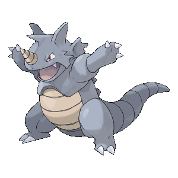

Início da Franquia
Criado por Satoshi Tajiri que colecionava insetos na infância e levou essa paixão até a fase adulta. O nome Pokémon vem do conceito Pocket Monsters (monstros de bolso). A franquia teve início como jogos para Game Boy mas se expandiu para desenhos, filmes e live-action, jogos de carta e brinquedos. Satoshi Tajiri tentou vender a ideia do Pokémon para a Nintendo durante 6 anos, mas ela só foi aceita quando teve ajuda do Shigeru Miyamoto, criador do Mario.
Primeiros jogos
No dia 27 de fevereiro de 1996 foram lançados Pokémon Red e Green no Japão. Com conceitos simples do RPG da época, o game se desenrola com o jogador usando os monstros subindo-os de nível (level) para se tornarem mais fortes. Nessa progressão eles aumentavam de poder e mudavam até a sua forma com a evolução, dependedo do nível de cada monstros.
Linha do tempo
Inicialmente, o jogo começou com 151 monstros. E o anime veio no ano seguinte, 1997. Os personagens principais são Ash Ketchum, na dublagem em janponês se chama Satoshi em homenagem ao criador, e o seu rival Gary. Em 1998, a franquia teve sua primeira loja inaugurada o Pokémon Center
O primeiro Pokémon a ser desenhado foi o Rhydon, antes mesmo do próprio Pikachu, ganhando destaque bem depois durante a produção do anime.
A popularidade mundial veio apenas em 1998 quando o lançamento chegou no Ocidente com as versões Red e Blue. Junto dos games o anime também veio do mesmo ano dando um gás na fama da franquia.
Então é isso! Espero que você tenha gostado desse breve resumo sobre a franquia Pokémon.